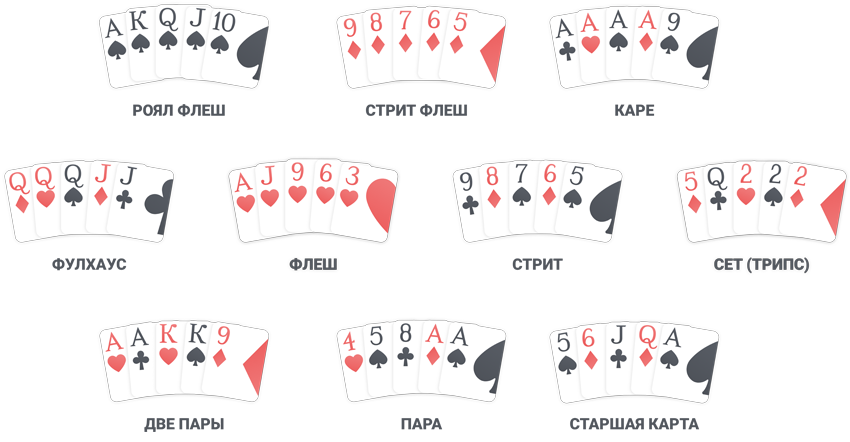

Покер
| Место | Участник | Проход в следующий раунд |
|---|
| Список участников |
|---|
Правила
Выигрышные комбинации классического покера
Обладателем банка игры будет тот, у кого на руках окажется самая высокая комбинация из карт. Правила игры в покер предусматривают 10 возможных комбинаций.
Чтобы понимать, как играть в покер, нужно запомнить старшинство данных покерных комбинаций:
- «Роял Стрит Флеш» – 5 самых старших одномастных карт.
- «Стрит Флеш» – 5 карт одной масти по порядку.
- «Каре» – 4 карты одного ранга.
- «Фулл Хаус» – комбинация, включающая в себя «Пару» и «Тройку» одновременно.
- «Флеш» – 5 одномастных карт.
- «Стрит» – 5 собранных по порядку карт любой масти.
- «Сет» или «Тройка» – 3 карты одного ранга.
- «Две пары» – 4 карты, среди которых собраны по 2 одинаковых по рангу.
- «Пара» – это 2 одинаковые карты.
- «Пара» – это 2 одинаковые карты.
Правила игры в классический покер
В игре может участвовать от 2 до 10 человек. Каждому игроку в Техасском Холдеме раздается по две
карты.
После раздачи начинается торговля, которая проходит в несколько раундов.
Два игрока по левую руку от дилера делают обязательные ставки, которые взимаются еще до начала
торгов. Это делается для того, чтобы стимулировать игроков на активную игру. Эти обязательные
ставки называются блайндами. Таковы правила игры в покер.
Если вы начинающий игрок, то знайте, что во время раздачи выгоднее иметь позднюю позицию, чтобы
отслеживать шаги своих соперников. Это не правила игры в покер, а скорее своеобразный тактический
ход.
После того, как игроки поставили блайнды, начинается первый этап торговли.
Правила игры в покер подразумевают наличие определенных действий, которые игрок совершает в процессе торговли:
- Поставить, бет (англ. bet) – сделать ставку
- Ответить, колл (англ. call) – поставить столько же, сколько поставил соперник – уравнять
- Поднять, рейз (англ. raise) – увеличить ставку – поставить больше, чем соперники
- Cбросить карты, фолд (англ. fold) – отказаться от дальнейшего участия в игре и сбросить карты
- Пропустить, чек (англ. check) – в ситуациях, когда ставка уже была сделана или ставки не были сделаны соперниками – не добавлять ничего в банк, оставить «как есть»
Круг торговли заканчивается тогда, когда все игроки сделали равные ставки или сбросили карты.
После первого круга торговли, если в раздаче остается больше одного человека, то, по правилам игры в покер, на стол кладутся три общие открытые карты, которые называют флоп. Общие карты нужно использовать для составления комбинаций.
Если и после этого раунда в раздаче остается больше одного человека, то кладут еще одну общую карту, которую называют терном. Аналогично флопу, после сдачи терна проводится еще один круг торговли.
После терна, если это необходимо, кладут последнюю общую карту – ривер.
После ривера следует еще один раунд торговли, и если после него на банк претендует два или более игроков, то происходит вскрытие.
Комбинации по правилам покера составляются из пяти общих карт и двух закрытых. Когда была осуществлена и уравнена последняя ставка, все оставшиеся в игре люди по очереди начинают открывать для противников свои карты. Из них составляются и оцениваются итоговые выигрышные комбинации.